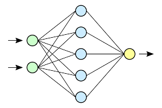
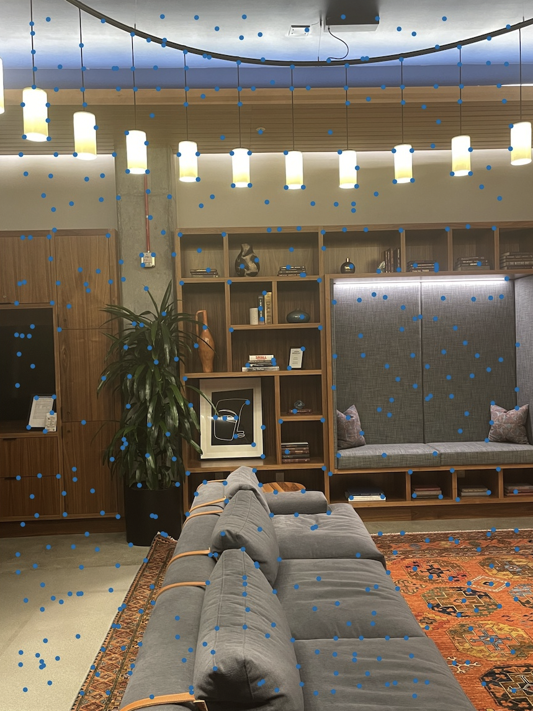
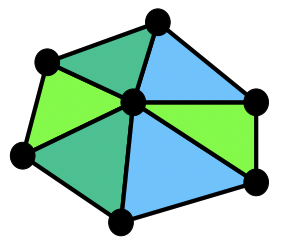
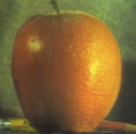
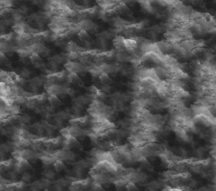

Projects
Facial Keypoint Detection with Neural Networks
CS 194-26: Project 5

[Auto] Stitching Photo Mosaics
CS 194-26: Project 4

Face Morphing
CS 194-26: Project 3

Fun with Filters and Frequencies
CS 194-26: Project 2

Colorizing the Prokudin-Gorskii Collection
CS 194-26: Project 1
Texture Transfer + Poison Blending
CS 194-26: Final Project

Pintos Operating System
CS 162: Course Project
End-to-End File Sharing System
CS 161: Course Project